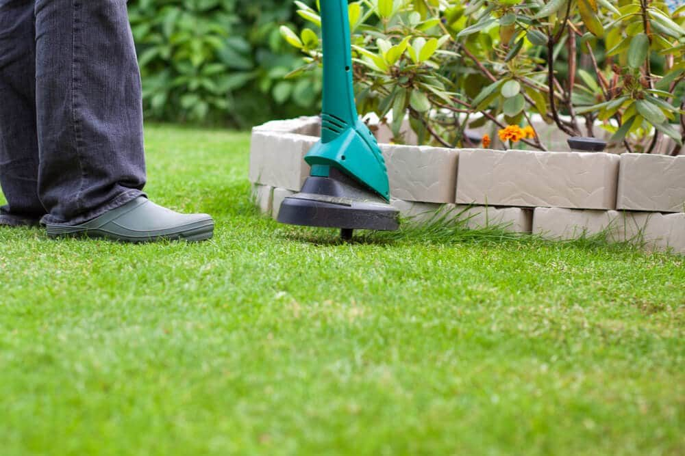
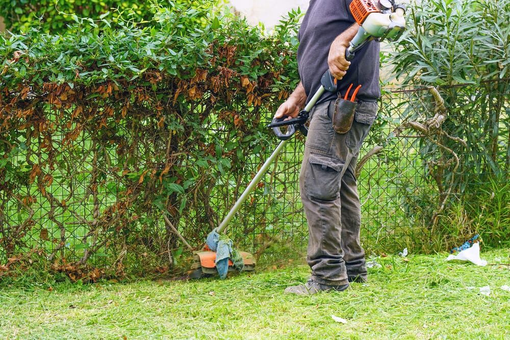

In This Guide
- A string trimmer can scuff or gouge vinyl, and the spinning line can also throw rocks and grit against the panels.
- Wear eye protection, keep the trimmer head a few inches off the fence, and work at a steady, moderate speed.
- Mulch, edging, and hand pulling near the posts cut down how often you need to trim right next to the vinyl.
- A quick wash with mild soap and water keeps vinyl looking fresh after trimming season.
Vinyl is one of the easiest fences to live with, but the grass and weeds along its base still need attention. The trouble is that a string trimmer spins a thin line at high speed, and vinyl scuffs more easily than most people expect. A slip of a few inches can leave a mark that does not wash off.
This guide from Big Easy Fence covers how to trim close to a vinyl fence without damaging it, how to choose a trimmer that suits your yard, and how to cut down on the trimming you need to do at all.
Why Trimming Near Vinyl Takes Care
Vinyl is a smooth, hard plastic, and it is one of the lower-maintenance residential fence materials. It does not rot and it does not need paint. What it does not like is friction and impact. A trimmer line whipping against a panel can leave a dull, scratched patch, and the head itself can gouge a post if it bumps in.
The spinning line also throws whatever it hits. Small stones, dirt, and chopped plant bits fly sideways at the fence, and a piece of grit at that speed can scratch the surface. In Louisiana, where grass grows fast for most of the year, that adds up to a lot of trimming passes each season.
Before You Start
Protect Yourself
Wear safety glasses or goggles every time, since trimmers throw debris in every direction. Add long pants, sturdy closed-toe shoes, and gloves. Gas models are loud, so use hearing protection with them. Keep kids and pets well back while you work.
Check the Yard
Walk the fence line first. Pick up sticks, stones, and toys, and note anything hidden in the grass, such as sprinkler heads, irrigation lines, or low garden lights. Clearing the area means fewer flying objects and fewer surprises.
Set Up the Trimmer
Make sure the guard is on and the line is the right length. A shield over the head is the first defense for your fence as well as your legs. A thinner line is gentler on vinyl than a thick, heavy one, though it may wear faster.
How to Trim Next to a Vinyl Fence
Step by Step
- Mow first. Cut the main lawn so the trimmer only handles the strip along the fence and does not bog down in tall grass.
- Choose a moderate speed. Run the trimmer at a steady, controlled pace. Full throttle throws more debris and makes it harder to hold the head steady.
- Angle the head away from the fence. Tilt it so the line spins and throws grass out toward the lawn, not into the panels.
- Keep a few inches of gap. Do not let the line touch the vinyl. If you need to get closer at the base, lower the head and make short, controlled passes.
- Slow down at the posts. Posts, corners, and gate hardware are easy to nick. Take them one at a time, and hand-pull the grass right at the base if you cannot trim it cleanly.
- Wipe down the fence. Brush or rinse off clippings and dust when you finish so they do not stain or stick to the panels.
Mistakes to Avoid
- Resting the line against the fence. Even light contact can scuff vinyl over time.
- Trimming with a dull or frayed line. It tears grass instead of cutting it, which makes you push harder and get closer.
- Working in a rush. Most damage comes from a quick swipe that got too close.

Choosing a String Trimmer
If you are shopping for a trimmer, the right size depends on your yard and how much brush you deal with.
Electric and Battery Models
Electric trimmers are quieter, lighter, and produce no exhaust fumes. Corded models are limited by the cord, while battery models let you roam. They are usually less powerful than gas, which is fine for a typical residential fence line.
Gas Models
Gas trimmers are stronger and better for large lots or tough, overgrown weeds. They are also louder and heavier, and they produce fumes, so they take more effort to control near a fence.

Cutting Heads and Shaft Length
A bump-feed head lets you tap the head on the ground to release more line, while a fixed-line head keeps a set length. Shorter shafts are easier to steer in tight spots, and longer shafts reach under shrubs and along the base of a fence without much bending.
Keep Weeds Away From the Fence Line
The best way to protect a fence is to trim near it less often. A few habits make a big difference.
- Pull weeds by hand at the base. It takes a few minutes and puts no spinning line anywhere near the vinyl.
- Lay mulch or landscape fabric. A strip of mulch along the fence slows weeds and gives you a clear edge to mow to.
- Install edging. A border between the lawn and the fence keeps grass from creeping up to the panels.
- Spot treat with care. If you use a weed killer, apply it only to the weeds, keep it off desirable plants, and skip windy days so it does not drift. Read the label before you spray.
Keep the Vinyl Looking Good
Grass clippings, pollen, and Louisiana humidity leave a film on vinyl, and damp corners can grow a green tint of mildew. Wash the fence a few times a year with a garden hose and a mild soap, use a soft cloth or brush, and rinse it well so no soap dries on the surface. Skip abrasive pads and harsh cleaners, which can dull the finish. For more habits that help, see how to take care of your fence for summer, or read the advantages and disadvantages of vinyl fences to see what upkeep to expect.
When to Get Help
Scuffs on vinyl are mostly cosmetic, but a cracked panel, a leaning post, or a sagging gate is a repair job. Small trimming marks are easy to live with, while structural damage is best handled by a professional so the fence stays secure. If your vinyl fence needs work, our fence repair team can take a look.
Thinking About a Low-Maintenance Fence?
Tell us about your yard and how much upkeep you want to take on, and we will point you to a fence that fits.